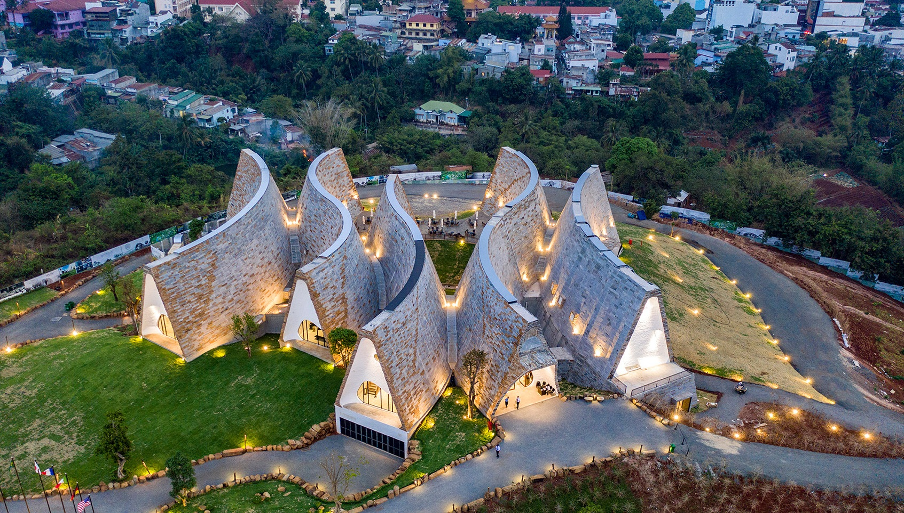
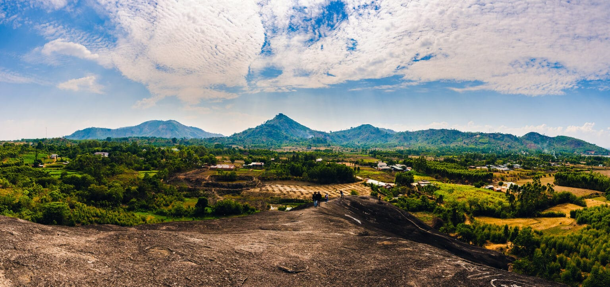
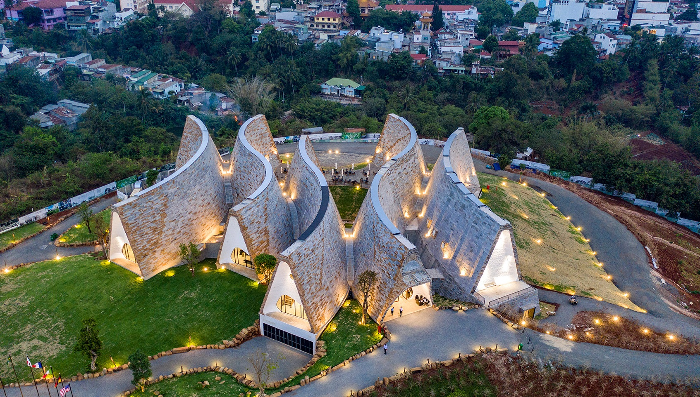
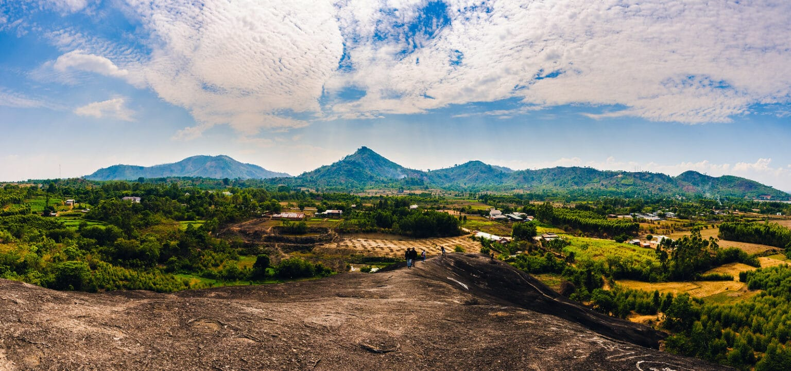

Văn hóa/Lịch sử
Ẩm thực: Các món ăn của Đắk Lắk mang phong vị tươi ngon từ rừng rậm, các món ăn được chế biến công phu, tài tình để tạo nên hương vị không thể quên, ví dụ:gà nướng Bản Đôn, lẩu rau rừng, cơm lam, …. Cà phê cũng là một loại nước khá nổi tiếng của vùng.
Công trình, kiến trúc: Công trình, kiến trúc của Đắk Lắk mang hình hài của núi rừng với những gian nhà sàn dài và cao thể hiện nét văn hóa đặc sắc, những tòa nhà cổ như biệt điện Bảo Đại hay những kiến trúc hiện đại như bảo tàng cà phê.
Văn hóa: Văn Hóa của vùng đất này đậm đà bản sắc dân tộc và các tộc người thiểu số Êđê, M’Nông, thể hiện qua các tác phẩm văn học nổi tiếng như Đăm San và các phong tục, lối sống và kiến trúc.

 


